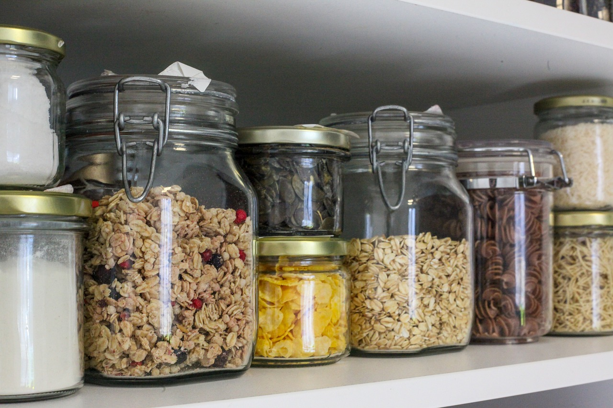

Az újrahasznosítás során a régi tárgyakat, mint papír, fém és üveg, újra felhasználjuk, hogy csökkentsük a hulladékot és védjük a környezetet. Mivel ezek az anyagok nem vagy nagyon lassan bomlanak le, az újrahasznosítás segít megóvni a természeti erőforrásokat és csökkenti a szemetet.
Újrahasznosítás

Hulladékmentes vásárlás
Szelektív szemét gyűjtés

Hasznosítás, hasznos anyag kinyerése